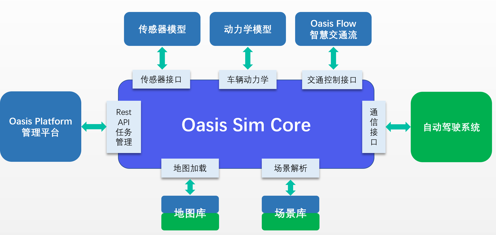
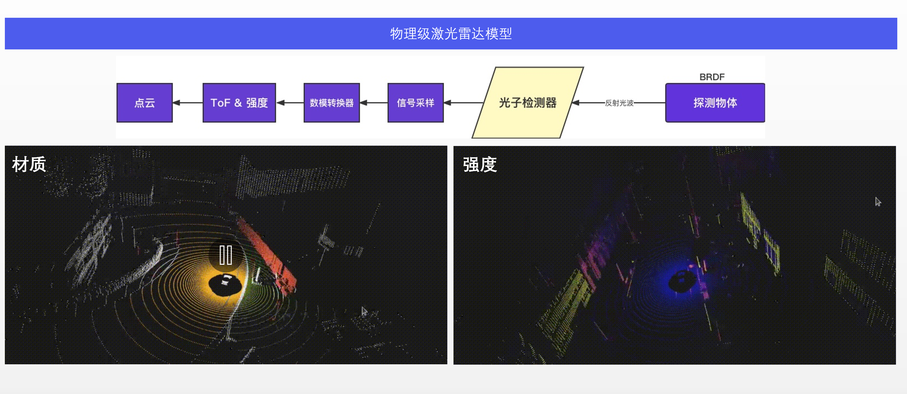
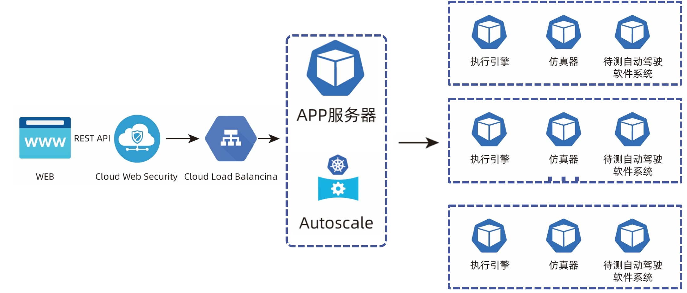
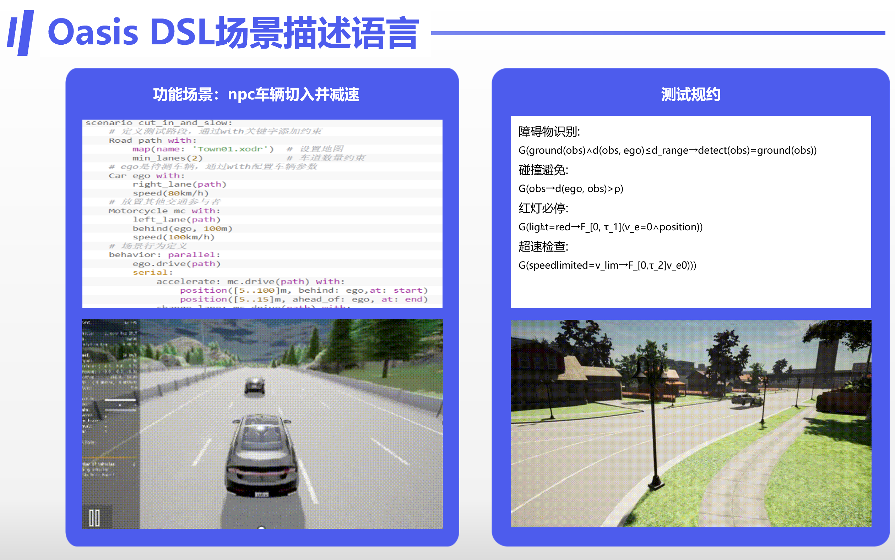
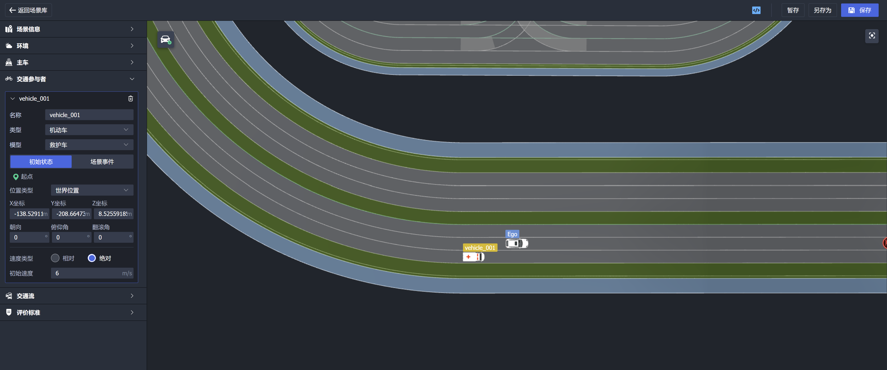

---
layout: page
name: oasis
permalink:
/projects/oasis/
title: Oasis
Project
---
采用开放开源形式研发的仿真测试平台及其生态有望连接科研，监管，产业三方，伴随智驾研发企业的成长和转型。OASIS
Sim定位为这样一个开放的仿真基础平台，以最小化的组织形式实现仿真关键功能。OASIS
Sim与Carsmos内其他开源项目组成完整智能驾驶研发工具链，降低研发门槛，提高研发自由度和可维护性。

OASIS Sim由核心仿真器OASIS Sim Core，仿真测试管理平台OASIS
Platform以及与传感器模型，车辆动力学模型，待测自动驾驶系统交互的各个接口组成。
OASIS Sim Core提供了仿真世界的执行逻辑。根据被测对象的不同，OASIS
Sim Core可提供基于目标状态的低渲染仿真和基于游戏引擎的高保真渲染仿真。围绕核心仿真器，OASIS Sim平台定义了统一的接口形式，支持高精度传感器模型，车辆动力学模型，场景描述，交通参与者行为模型和被测系统的集成。OASIS
Sim实现了由测试定义，测试执行和测试结果分析组成的完整仿真业务流程。目前OASIS
Sim Core基于开源仿真器Carla二次开发实现，但亦可替换为LGSVL，AirSim甚至VTD等商业仿真器。
传感器仿真插件通过传感器接口与OASIS Sim Core交互，可实现激光雷达，视觉传感器，毫米波雷达模型与OASIS
Sim Core的联合仿真。

动力学仿真可通过仿真器自带的简单动力学模型实现，OASIS Sim Core通过Carla同时支持Carsim, EchoSim等专业动力学仿真软件。
场景描述通过OASIS DSL场景描述语言及位于OASIS Platform上的交互式场景编辑器支持。OASIS
DSL语法兼容OpenScenario 2.0，同时OASIS
Sim Core通过二次开发的Carla scenario_runner也支持90%以上的OpenScenario 1.0场景标签。静态场景描述支持OpenDrive 1.1。
交通流仿真支持Sumo， PTV Vissim等专业微观交流仿真软件。
系统通信接口包含Dora_bridge,
Ros_bridge及CyberRT_bridge。支持基于Dora,
ROS1/2（Autoware）及CyberRT（Apollo）开发的智能驾驶系统。对私有协议的支持可通过新的桥接器的开发完成。
OASIS Platform 负责与用户的交互，实现仿真任务定义，任务状态监控，仿真结果分析（例如日志查看与仿真回放）等业务。用户定义的仿真任务被发送至任务队列，由后端包含OASIS
Sim Core的任务执行器拾取并执行。
OASIS Sim采用云原生架构，各种仿真组件以容器化微服务的形式部署，可被容器编排器统一管理。池化的任务执行器可根据负载在云端横向扩展。

针对本地的硬件在环和车辆在环仿真测试，OASIS Sim本地版将提供实时的目标级仿真和近实时的传感器仿真能力。
OASIS DSL 场景描述语言
基于场景的仿真测试是目前被广泛采用的测试方法。对场景的有效描述是实现规模化、自动化仿真测试的重要前置条件。
自动驾驶仿真测试场景库中通常包含由场景描述语言描述的各种具体场景、泛化生成的场景、及借助验证分析技术生成的缺陷场景及安全关键场景。通过对自动驾驶场景的标准化描述，不仅做到了使计算机能够解析及计算场景，而且满足了不同开发设计阶段对场景描述的需求，实现了场景重用，有利于形成高效的场景库管理机制，提高数据资源的利用率。
目前使用较广泛的场景描述方式包括自然语言、结构化数据以及形式化语言等。自然语言主要用于描述感性的和抽象的场景，不具备可执行性；结构化语言适合对简单、确定性场景的描述，但是不能够描述复杂的不确定场景；形式化语言可以描述复杂系统、不确定性事件的预期和行为，也具备可执行性，被认为是描述自动驾驶仿真测试场景的最佳方法。形式化场景描述语言不仅可以有效支持自动驾驶系统的仿真测试，还可以广泛应用于其它人工智能系统的仿真测试验证，例如机器人、智能制造、无人机等。

OASIS DSL是一套面向动态交通场景描述的形式化领域特定语言，具备以上形式化语言的优势。OASIS
DSL开源项目提供了语法设计，领域模型及语言在OASIS
Sim仿真平台上的实现，包括基于OASIS
DSL的交互式场景编辑器。

OASIS DSL的语法结构能够描述语言元素之间的组织关系以及如何通过这些关系推导出符合语法的场景表示。为了满足语言的表达能力以及语义对应关系，OASIS
DSL的语法结构采用上下文无关语法(Context-Free
Grammar) 的设计原则，以及采用巴科斯范式（BNF：Backus
Normal Form）的形式化语法描述方式。作为一种元语言，BNF不仅能严格地表示语法规则，而且所描述的语法是与上下文无关的。BNF具有语法简单，表示明确，便于语法分析和编译的特点。此外，在设计与实现上述语法结构过程中，OASIS
DSL还满足了以下6方面的语言特性：
为了尽快推动自动驾驶技术及产业发展，亟待建立基于标准化的仿真测试验证和认证体系框架，并利用开源+商业的合作模式，来实现云服务的开放式合作社区，形成良性循环。OASIS
DSL场景描述语言能够在标准化的仿真测试评估中充分发挥其作用和价值，有助于推动自动驾驶技术产品快速迭代优化，形成可闭环、可落地的实际应用能力。达成这样的目标还需要主机厂、自动驾驶方案供应商、研究机构和标准组织等产学研单位，充分利用Carsmos开放平台集思广益、共同合作完成。